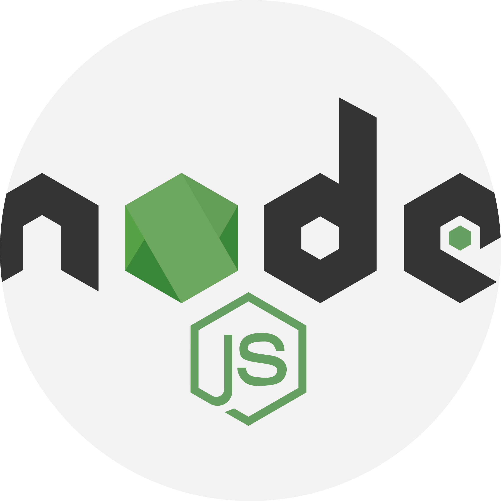
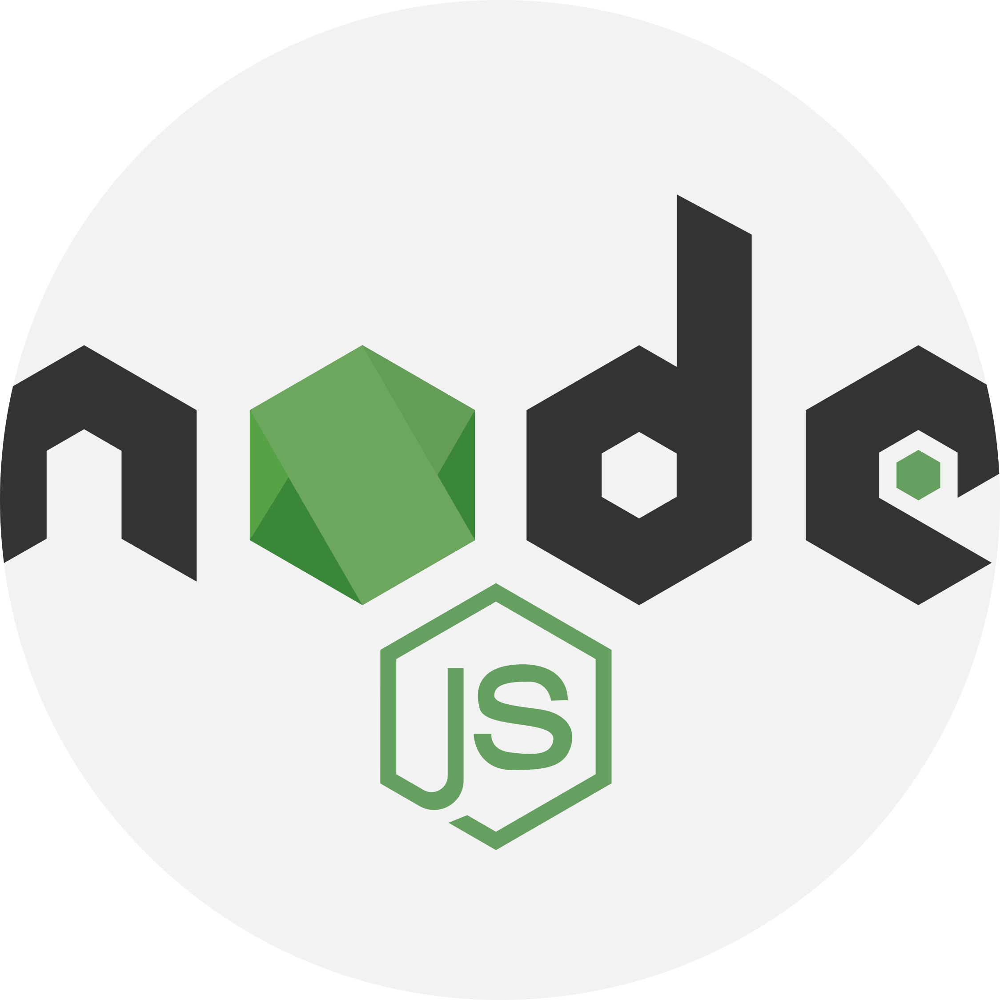
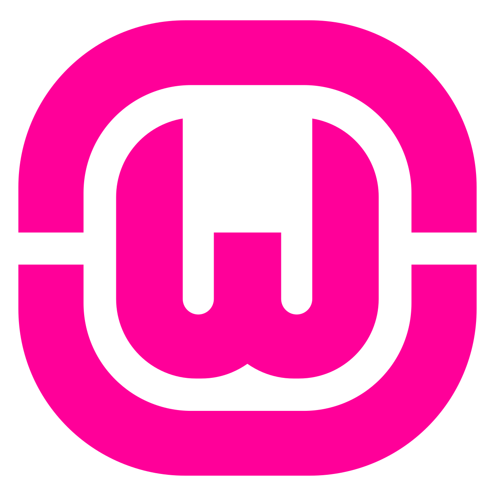
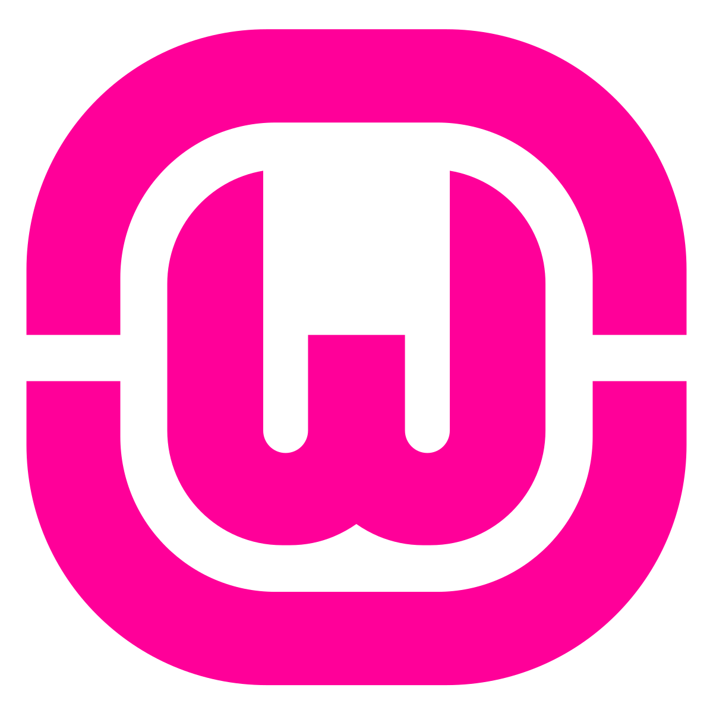

Bienvenue sur mon portfolio
Développeur passionné, découvrez mes compétences, projets et mon parcours.
Mon CV
Vous pouvez télécharger mon CV en cliquant sur le lien ci-dessous :
Télécharger en PDFTélécharger en JPG
{kind=link}
Mon parcours
Passionné par le web, j'ai commencé mes études en informatique en réalisant un Bac professionnel Système Numérique Option RISC au lycée Jules Siegfried au Havre. J'ai choisi cette formation, car je l'ai trouvé professionnalisante, durant chaque année, je devais réaliser un stage en entreprise.
Après l'obtention de ce diplôme, j'ai commencé un BTS SIO Option SLAM (développement) au lycée St Jo Sup le Havre, je suis actuellement à ma deuxième année.
J'ai approfondi mes compétences à travers divers projets académiques et professionnels.
Expériences acquises
 


 

Durant mes études et mes stages, j'ai acquis de solides compétences dans l'utilisation de divers outils et technologies essentiels au développement web et au développement logiciel. Ces expériences m'ont permis de maîtriser :
- MySQL pour la gestion et la manipulation de bases de données relationnelles complexes, garantissant des solutions performantes et sécurisées.
- Node.js pour la création d'applications back-end robustes, avec une attention particulière aux performances et à l'extensibilité.
- PostgreSQL, une base de données avancée, pour les projets nécessitant une gestion efficace et des fonctionnalités avancées.
- Visual Studio Code, mon environnement de développement intégré (IDE) de prédilection, optimisé pour une productivité maximale grâce aux extensions personnalisées.
- WAMP pour le développement et le test de sites web en local, assurant une transition fluide vers les environnements de production."
Mes stages
Usine Renault Sandouville
Durant ce stage, j'ai réalisé une mission consistant à créer une page permettant de naviguer entre différents tableaux de bord via des boutons et des filtres. Pour ce projet, j'ai utilisé différents langages comme HTML, CSS, JavaScript, PUG ainsi que la bibliothèque Ajax pour le JavaScript.
Caux Seine Agglo
Réaliser un stage dans une communauté de communes m'a permis de découvrir de nombreuses choses et de visiter différents lieux. Il y avait de nombreuses missions variées à effectuer. J'ai pu installer des postes de travail, réaliser du dépannage réseau et effectuer des installations téléphoniques.
Nicolas et Fils
Être dans une petite entreprise familiale pour un stage m'a permis d'élargir mon expérience en milieu professionnel. Durant ce stage, j'ai acquis des bases solides dans la conception et le montage d'ordinateurs, mais aussi dans le dépannage de produits défectueux, l'étiquetage, la livraison, et bien plus encore.